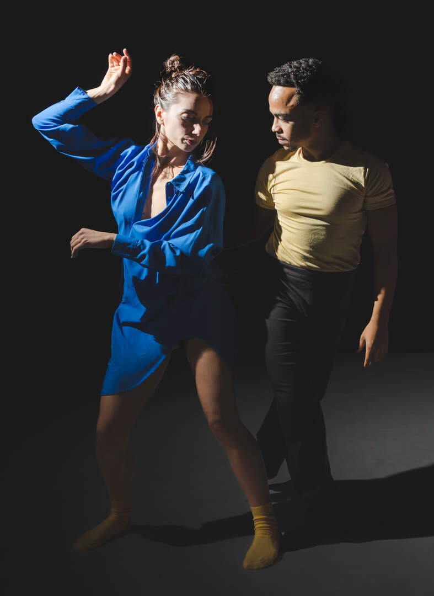
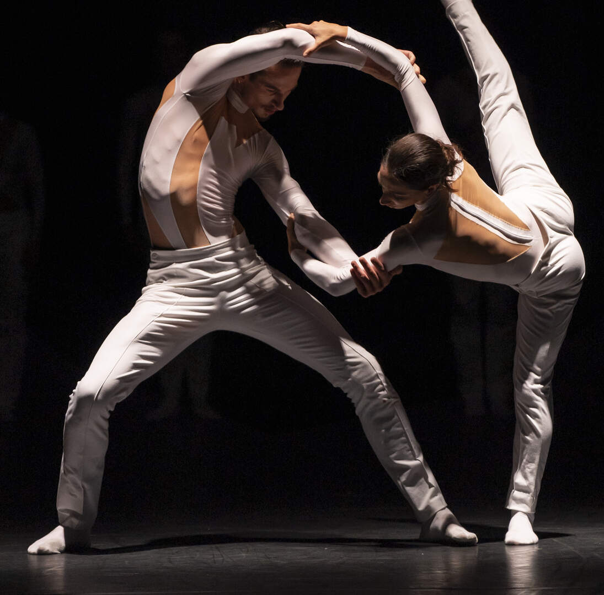
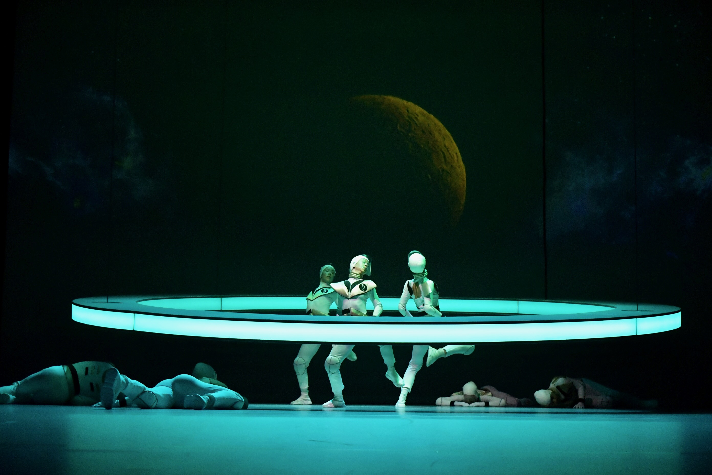
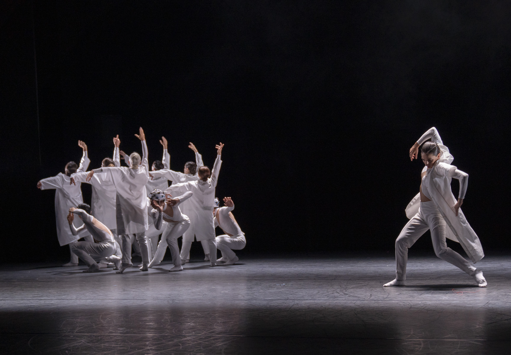
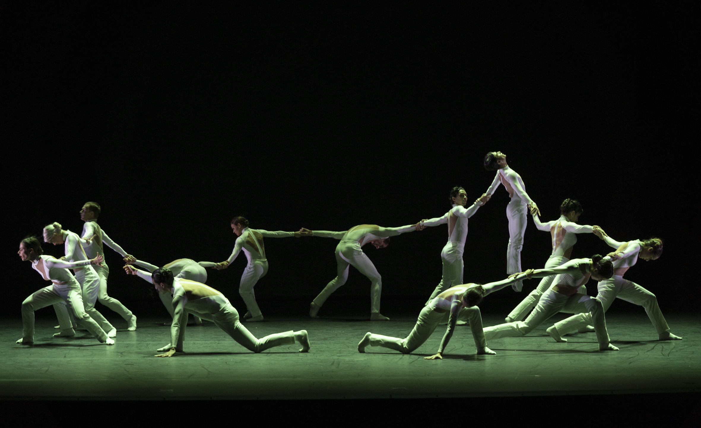
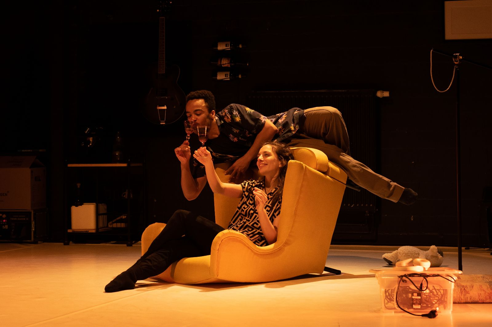
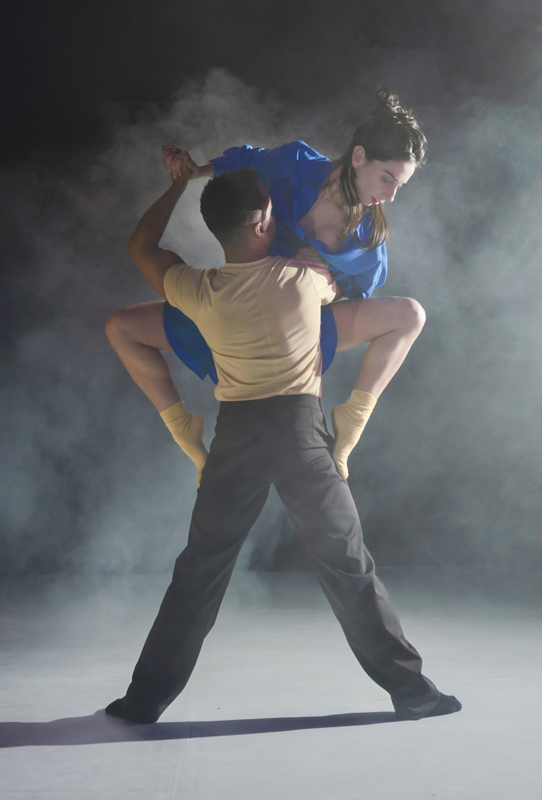

Choreographer · Oldenburg, Germany
LESTER
René
Scroll







Movement choreography for a full Schauspiel ensemble in a phantasmagorical musical theatre production — horror aesthetics, dark humour, physical precision.
"The ensemble brilliantly delivers in the choreography of Lester René" — NWZ, 2026
Watch trailerIntimate dance-theatre duet tracing cohabitation — tenderness, conflict, reconciliation — through a full range of movement registers, from playful to raw.
"Impressive and humorous in equal measure" — NWZ, 2023
Watch trailerFull-evening work for 8 dancers. A cosmological journey through the three Saturn returns of a human life. Score by Johann Pätzold.
"Powerful and striking images — every movement precisely choreographed" — Ostsee Zeitung
Watch trailerEnsemble work for 13 dancers exploring identity loss and transformation — two conflicting worlds moving toward shared harmony. World-premiere score by Johann Pätzold.
"Ballet catapulted into the next millennium — an ensemble that moves with its era" — Radio Bremen
Watch trailerEnsemble work for 7 dancers. The lighthouse as symbol of warning and illumination — exploring fear, collective resilience, and the courage to grow beyond oneself.
"Very fresh. Very surprising. Essential viewing" — Radio Bremen, 2017
Watch trailerLester René is a choreographer working at the intersection of contemporary dance, physical theatre, and interdisciplinary performance. His work draws on a rich and distinctive movement vocabulary — at once expressive and precise, fluid and exacting — to build choreographic worlds that move between the visceral and the poetic.
Whether for large ensembles or intimate duets, his pieces navigate tension and transformation: between fear and courage, chaos and harmony, tradition and new reality.
Born in Cuba, trained in Camagüey, Madrid and Dresden — including studies at the Palucca University of Dance and a formative period with The Forsythe Company — he has been based in northern Germany since 2012.
A small circle of artists whose presence, sound and visual worlds have shaped key works across the years.
A foundational presence in Lester René's artistic and personal path: co-creator, choreographic assistant, costume designer and a key performer across his works.
Another pillar in Lester René's career, helping guide the emotions he wants audiences and dancers to feel through music. A collaborator since 2017, he has composed original scores for most of his works.
Animator and visual collaborator for Quantum Leap and Saturn Return, contributing projected worlds that expanded the physical stage space.
Designed the costumes for Lester René's first choreographic work, helping define the visual identity of that debut piece.
Very fresh. Very surprising. Essential viewing.
An interesting and demanding movement language that carries you along and gives you something to think about.
Ballet catapulted into the next millennium — an ensemble that moves with its era.
Powerful and striking images. Every movement precisely choreographed.
Impressive and humorous in equal measure — with a whole range of emotions.
The ensemble also brilliantly delivers in the choreography of Lester René. Everything just works.
Brave and full of esprit, revealing inner distress and passionate longing through individual expression.
Available for choreographic commissions, collaborations and residencies. Germany and internationally.